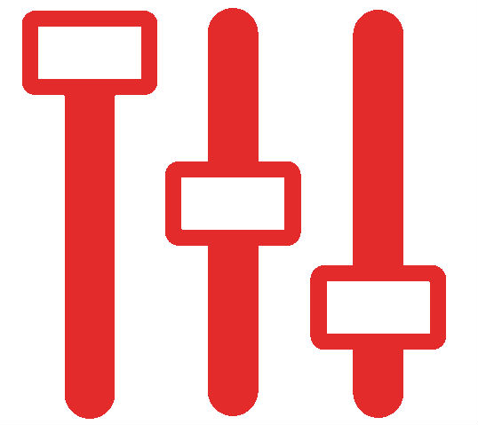

About us
Who we are
We are high quality team of freight forwarders. Thanks to great experience and different shipments and clients from all over the world , we know how to provide logistic services: it must be quite, fast, informative, competitive, flexible, confidence and reliable. This is who we are! Thanks to wide agency and partnership with container shipping lines, we monitor and negotiate competitive ocean freight rates, have an ability to provide guarantee spaces for target vessel. Test our possibilities - enjoy our service!
What we do
Logistic container ship consulting
Logistic consulting for the target commercial shipments: - Surfing the ocean freight rates according to the terms of shipment specifity; - developing the logistic decision for multimodal transportation; - providing ocean freight rate forcast and market situation for our clients; - providing suitable vessel schedule; - helping to find more suitable way to organize target shipment: FOB /FAS/FCA/EXW/CIF shipment, direct or non-direct transit time, Home Bill of Lading, Master Bill of Lading only, or Sea way Bill, collect or pre-paid term, etc.
Booking shipments and shipment/customer supporting.

 Fast and informative booking.
- Checking in advance for available space for target vessel and free time for demurrage needed;
- Quick connection to provide booking details for agency in-time;
- Collecting the shipper /consignee and agency for checking cargo readiness, loading date, empty containers release, shipping insrtuctions providing, documentation preparing for checking and confirmation, documentation issues.
- Interactive solving missunderstands and lake of information between shipper/consignee, agency, shipping container line, port structure.
Tracking and tracing.
Fast and informative booking.
- Checking in advance for available space for target vessel and free time for demurrage needed;
- Quick connection to provide booking details for agency in-time;
- Collecting the shipper /consignee and agency for checking cargo readiness, loading date, empty containers release, shipping insrtuctions providing, documentation preparing for checking and confirmation, documentation issues.
- Interactive solving missunderstands and lake of information between shipper/consignee, agency, shipping container line, port structure.
Tracking and tracing.
Controling
Controling on each step of transportation way. Why clients choose us? We provide full shipment control according to shipment term. We solve any logistic task on the cargo transport way. We always try to decrease logistic costs for our clients and negotiate with carriers for special price offer. We try to minimize logistic problems for our clients, we just do our work, and our clients have more time to do their work. We are the partners!
Directions
Our core directions for which we can offer competitieve ocean freigh rates are from China to elsewhere,
from Germany to elswhere, and from Ukraine to elsewhere.
Negotiation
Documentation